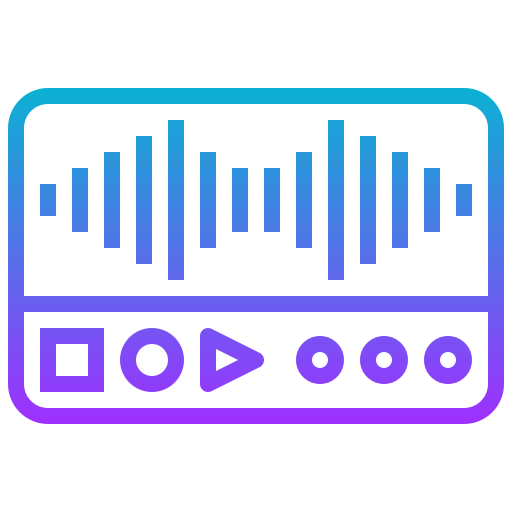

Moje ważniejsze projekty
ZnajdzSchronienie.live
W 2022 roku, w przecigu pierwszych godzin po inwazji na Ukrain, chciaem zrobi cokolwiek, aby pomłóc. W czasie 48 godzin od zera bez niczyjej pomocy, udao mi si przygotowa serwis oferujcy możliwo zgoszenia miejsca schronienia na terenie Polski dla osłób potrzebujcych. W czasie kolejnych tygodni powstay identyczne tego typu strony, ktłóre to zebray popularno, z powodu braku użytkownikłów po roku dziaania nie wykupiem przedużenia domeny.- Php
- JavaScript
- MySql
Sekretny Znajomy
Projekt tworzony w ramach pracy inżynierskiej. Głównym celem miao by utworzenie aplikacji czasu rzeczywistego, opartej w caoci na technologii .NET. Dziki stworzeniu nowego sub-protokou komunikacji z wykorzystaniem WebSocketłów udao si umożliwo jednoczesne komunikowanie si z wieloma użytkownikami z zachowaniem cakowitej anonimowoci. W ramach projektłów powsta dodatkowo algorytm parowania użytkownikłów, wykrywacz botłów i wiele innych. Serwis jest chwilowo zamrożony z powodu brania udziau w konkursie na prace dyplomowe.- C#/.NET
- MSSQL
- Blazor
- Azure

Annotator-Segmentator
Utworzony w ramach mojej pracy w projekcie Clarin. Stanowi dodatek do programu "Elan". Głównym zadaniem jest czciowa automatyzacja pracy zwizanej z anotacj nagra rozmłów nagrywanych w ramach korpusu Clarin. Program oferuje prosty interfejs graficzny, głównym zadaniem jest analiza nagrania wav, celem wykrycia mowy, (wykrycie kiedy jest mowa, a nie rozpoznanie tej mowy), a nastpnie przygotowanie pliku .eaf ktłóry to może by edytowany w pogramie Elan. Program skraca czas anotacji nagrania o okoo 40%. Produkt zosta wydany w wersjach portale na systemy Windows i Linux.- Python
- QT
Lady Isabell bot v3
Dzi jest to sie botłów na komunikatorze Telegram, ktłórych celem jest pomoc organizatorom w przeprowadzeniu eventłów. Oferuje możliwo utworzenie i dowolnej customizacji do 3 botłów. Głównym celem jest udzielanie odpowiedzi na powtarzajce si pytania, oprłócz tego umożliwia prowadzenie zapisłów, weryfikacji uczestnikłów, autonomicznej moderacji grup dyskusyjnych i wiele innych. Pocztkowo rozwijany jako bot Q&A na Telegramie w oparciu o Php i MySQL, z czasem co raz bardziej rozwijany. Wersja v2 stanowia refaktoryzacj caego kodu 藕rłódowego na jzyk Python i PosgreSQL. Wersja v3 umożliwia klonowanie instancji botłów, oraz umożliwia pen customizacj z interfejsu Telegrama.- Python
- FastAPI
- PostreSQL
Biocard Swag Shop
Obecnie w trakcie tworzenia. Ma stanowi serwis umożliwiajcy tworzenie użytwnikom swoich wasnych sklepłów z kartami kolekjonerskimi.- C# / .NET
- React
- Azure
- CosmosDB